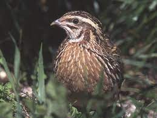

Bienvenido a nuestra empresa AVICOLA BARRERA
¿Cómo sé si mi pollo es gallo o gallina? Los pollos, cuyo nombre científico es Gallus gallus, presentan el dilema de cómo saber con exactitud si el pollo es gallo o gallina. Esto ocurre porque a simple vista los rasgos característicos entre ambos sexos son similares, y pueden tender a confusión.
A continuación vamos a dar diferentes consejos para diferenciarlos:
Las alas: Si las alas son parejas estaremos ante un macho, sin embargo, si estas son de diferentes tamaños sería una gallina. Es recomendable aplicar esta prueba a uno o dos días del nacimiento del polluelo, lo cual garantiza mayor efectividad en sus resultados.
El cuerpo: El tamaño del pollito es un identificativo muy fiable para saber si es una hembra o un macho, solo que debes aplicarlo cuando el ave tenga entre 3 y 4 semanas de nacido. En este caso, los machos tendrán su cuerpo y cabeza más grande, mientras que las hembras se distinguen por ser de apariencia más enclenque.
Sus plumas: Cuando nacen estarán cubiertos de un plumaje mullido y suave, que para las hembras es en la cabeza de un color más oscuro y pueden presentar manchas o rayas a lo largo de todo el cuerpo; en cuanto a los machos, las plumas son mucho más claras. Su cola, por ejemplo, muestra unas plumas más arqueadas y de una mayor dimensión que las de su contraparte femenina.
Sus sonidos: Si alguna vez has vivido en una granja, o cerca, seguro que el sonido del gallo te habrá despertado. Y es que solo el macho hace ese sonido tan característico, el más que famoso kikirikí, es conocido como canto; mientras que las gallinas emiten un sonido muy distinto, llamado cacareo. Como curiosidad, contarte que el motivo de dicho canto por parte del gallo es para marcar su territorio (desafiando al resto de gallos) y atraer a las hembras
Pollos
Gallinas
Gallinas de media engorda
Sabies qué?
Si todos los pollos en la tierra estuvieran distribuidos uniformemente entre todas las personas en la tierra, cada persona tendría al menos 3 pollos.
1.Existe una gran cantidad: Es la especie de aves más numerosa del planeta. Los cálculos apuntan a que hay más de 24 billones de pollos en el mundo más que cualquier otra especie de aves.

2.Son juguetones: Si tienen suficiente espacio, correrán, saltarán, e incluso tomarán el sol.
3.¿Primero la gallina o el huevo?: La respuesta a esta pregunta tan polémica de “quién fue primero” se resolvió en 2010, cuando científicos descubrieron una proteína llamada Ovocleidin-17, y se demostró que esta acelera la producción de cáscaras de huevo en gallinas, por lo que el huevo no se puede producir sin Ovocleidin-17, que a su vez no puede ser producido sin el pollo, demostrando así que el pollo vino primero.
4.Les gusta bañarse: A los pollos les encantan los baños de polvo. Estos pueden sentir tanto placer excavando un agujero poco profundo en la tierra como también estirando sus alas y revolcándose en el polvo. Además, los baños de polvo les ayudan a mantener un aislamiento adecuado para sus plumas y las protegen de los parásitos.